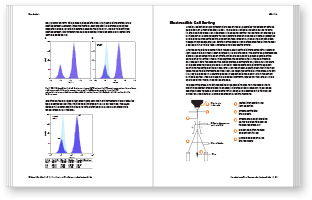

Benchtop cell sorting with the S3e cell sorter> Learn More |
|
Take contol of the how, when and where of cell sorting with the S3e.
The S3e cell sorter lets you start sorting in your own lab with:
See how you can start sorting with the S3e by downloading this short guide that provides you with the flow cytometry knowledge you need.
|
| > Learn More  |
|
Copyright © BIO-RAD LABORATORIES
Our address is 2000 Alfred Noble Drive, Hercules CA 94547, USA
|